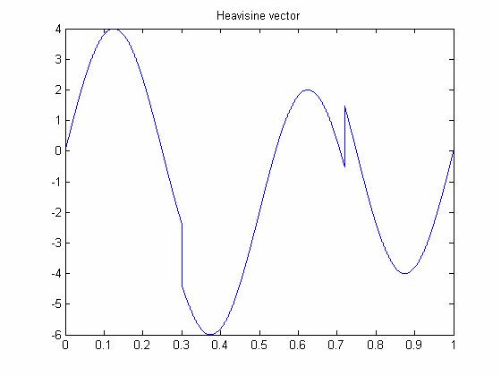
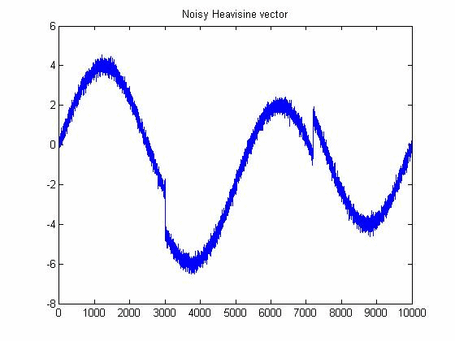
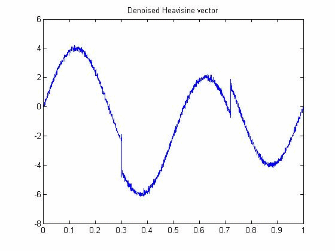

| DiscreteWavelets Toolbox |
Perform SureShrink denoising on a vector or matrix
y = SureShrink(v,h,its)
y = SureShrink(v,h,its) takes as input a (presumably noisy) vector or matrix v, an orthogonal filter h, and a number of iterations its, and returns a denoised estimate y of v.
If v is a vector, its length must be even; if v is a matrix, its dimensions must be even.
The orthogonal filter h must be of even length.
The number of iterations its must be a positive integer.
SureShrink first computes its iterations of the wavelet transformation formed using h and then uses the first iteration (highpass portion) to estimate the noise level. The SureShrink tolerance lambdasure is then computed and used in conjuction with ShrinkageFunction to shrink the highpass portions of the transform. An inverse transformation is perform and the result is returned as y.
SureShrink also checks for sparseness in each highpass portion. If a highpass portion is found to be sparse, SureShrink instead computes the universal threshold lambdauniv and performs shrinkage with that tolerance instead.
For more information on the SureShrink method, please see Section 9.3 of the book.
Apply SureShrink to denoise a noisy vector.
x=0:.0001:.9999; %Evaluation points
u=Heavisine(x) %Create a vector of Heavisine values
plot(x,u); %Plot the original signal
title('Heavisine vector');
noise=randn(1,10000); %Create white noise
sigma=.2; %Set a noise level
v=u+sigma*noise; %Create the noisy vector
figure
plot(v);
title('Noisy Heavisine vector');


Now apply SureShrink with the Coiflet 6-term filter to denoise v. Apply three iterations of the wavelet transformation.
z=SureShrink(v,Coif(1),3);
plot(x,z);
title('Denoised Heavisine vector');

DonohoSure, NoiseEstimate, TestSparseness, UniversalThreshold, WaveletShrinkage
© 2007-2008 Patrick Van Fleet